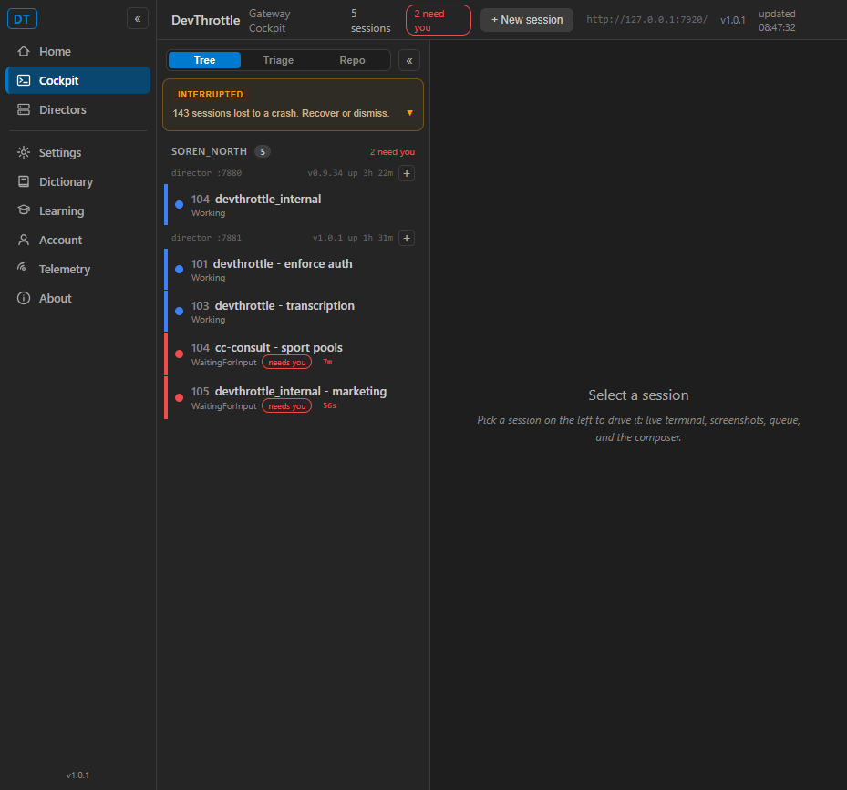

Issue #920 - Make the Cockpit authenticate under enforced Gateway auth
issue-920-cockpit-auth, PR #921./_blazor and session data is not weakened - it is made stricter on the browser Cockpit shell only.
What was implemented
Under the enforced Gateway auth gate (Phase 1, #917), a browser navigation to /cockpit bypassed auth because /cockpit was in AuthMiddleware.PublicPaths. The Blazor shell booted, but its /_blazor SignalR circuit and /_framework assets are credential-gated and returned 401 without the cc-gateway-token cookie - a dead Cockpit whose circuit could not start.
- src/CcDirector.Gateway/Util/AuthMiddleware.cs -
/cockpitis a dual-use path. The JSON API form (a programGETwith noAccept: text/html- the desktop app's Open Cockpit / Learn buttons resolving the front-door URL) stays public so the out-of-scope native app keeps working. A browser navigation to/cockpit(Accept: text/html, detected via the existingCockpitProxy.IsBrowserPageRequest) is no longer public: it falls through to the gate and, with no cookie, is 302-redirected to/login. After sign-in the cookie carries to the shell's same-origin requests so/_frameworkand/_blazorauthenticate (200). - src/CcDirector.Cockpit/Program.cs - the Cockpit's own server-side calls to the Gateway (roster
GET /sessions, per-session verbs) now present the per-machine gateway token (read from disk, the same token the/voicepage already injects) as a Bearer, so the session list renders under enforcement. This authenticates a legitimate co-located caller (exactly as a Director does) - it does not open any endpoint. - src/CcDirector.Gateway.Tests/CockpitAuthServingTests.cs - six integration tests over a live auth-on Gateway covering the whole path.
Acceptance criteria → proof
| Criterion | Result | Evidence |
|---|---|---|
Loading the Cockpit and signing in yields a fully working Cockpit: circuit connects, /_framework loads (200), session list + live data render; no 401 in the browser network log after login. | PASS | Screenshot 2 (live roster, 5 sessions). In-browser fetch: /_framework/blazor.web.js, /_blazor/initializers, /sessions?envelope=true, /healthz all 200. Transcript C/D/E. |
| An unauthenticated Cockpit visit is driven to the login flow. | PASS | Screenshot 1. GET /cockpit (Accept: text/html, no cookie) → 302 /login?next=%2Fcockpit. Transcript A. |
Session-data / /_blazor circuit calls still require the credential (401 without the cookie) - gate not weakened. | PASS | /_blazor/initializers, /_framework/blazor.web.js, /sessions all → 401 with no credential. Transcript A. Tests Blazor_circuit_without_a_credential_still_401s, Framework_assets_without_a_credential_still_401. |
Regression: Phase 0 PASS surfaces still pass - /sessions 401-without / 200-with Bearer; /m + /healthz public. | PASS | /sessions: 401 no-token, 200 with Bearer. /healthz: 200. /m: 404 (public, not auth-gated - shell just not staged in the dev build). /cockpit JSON: 200. Transcript A. Test Regression_sessions_requires_bearer_and_healthz_stays_public. |
| Full Gateway test suite green; add/adjust a test covering the Cockpit auth path. | PASS | 1196 passed / 0 failed, incl. the 6 new CockpitAuthServingTests. |
Screenshot 1 - unauthenticated Cockpit visit redirected to login (AC2)

http://127.0.0.1:7920/cockpit with no cookie; the URL became /login?next=%2Fcockpit and the DevThrottle Gateway login page rendered.Screenshot 2 - fully working Cockpit after login, under enforcement (AC1)

Live HTTP transcript
Full transcript: gateway-http-transcript.txt (in this folder). Key lines:
UNAUTHENTICATED (no cookie): GET /cockpit (Accept: text/html) -> 302 Location=/login?next=%2Fcockpit [#920 fix] GET /_blazor/initializers -> 401 [gate NOT weakened] GET /_framework/blazor.web.js -> 401 [gate NOT weakened] GET /sessions -> 401 [session data gated] GET /cockpit (JSON, no Accept html)-> 200 [native app path stays public] GET /healthz -> 200 [public] LOGIN: POST /login (machine token) -> 302 [sets cc-gateway-token cookie] AUTHENTICATED (with cookie) - no 401 after login: GET /cockpit (browser shell) -> 200 GET /_framework/blazor.web.js -> 200 GET /_blazor/initializers -> 200 GET /sessions?envelope=true -> 200 In-browser (cc-playwright, authenticated page): /_framework/blazor.web.js -> 200, /_blazor/initializers -> 200, /sessions?envelope=true -> 200, /healthz -> 200
How the live proof was run
Isolated from the user's running Gateway (7878) / Cockpit (7470):
- Gateway: dev console host on
127.0.0.1:7920, auth gate ON by default (issue #917, no override),CC_GATEWAY_NO_TAILSCALE=1, isolatedCC_DIRECTOR_ROOT(own token + no cloud side effects). Real Director instance files copied in so 5 live sessions were aggregated. - Cockpit: isolated child on
127.0.0.1:7471,Cockpit__GatewayUrl=http://127.0.0.1:7920. - Browser: cc-playwright on its own
cockpit920connection.
CenCon impact
No architecture or security-posture drift. This restores the intended gate (the public set is documented as "the ONLY way in without a credential") and makes it slightly stricter on the browser Cockpit shell, never weaker. No security_profile.yaml rule changed; no new public data endpoint. The Cockpit-side change adds a credential to a legitimate co-located caller.